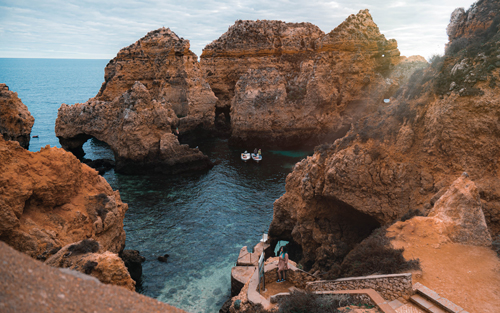

Urlaub & Reisen - Wissenkalender
Das touristische Kalenderblatt
28.11.1520:
Vier Wochen nach ihrer Entdeckung gelingt Ferdinand Magellan die Durchfahrt durch die später nach ihm benannte Magellanstraße an der Südspitze Amerikas; er erreicht mit drei Schiffen den Pazifik.
mehr ...
Vier Wochen nach ihrer Entdeckung gelingt Ferdinand Magellan die Durchfahrt durch die später nach ihm benannte Magellanstraße an der Südspitze Amerikas; er erreicht mit drei Schiffen den Pazifik.
mehr ...

WusstenSie, dass...
… die älteste Airline, die noch ihren Gründernamen trägt, die KLM
Royal Dutch Airline ist, sie wurde am 7. Oktober 1919 gegründet.
mehr Wissenswertes ...
mehr Wissenswertes ...
Begriffe aus der Touristik
[Calendar JS by derletztekick.com]